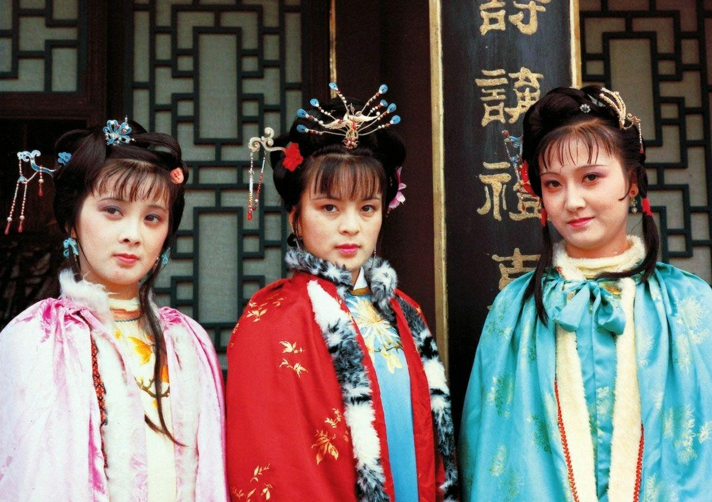
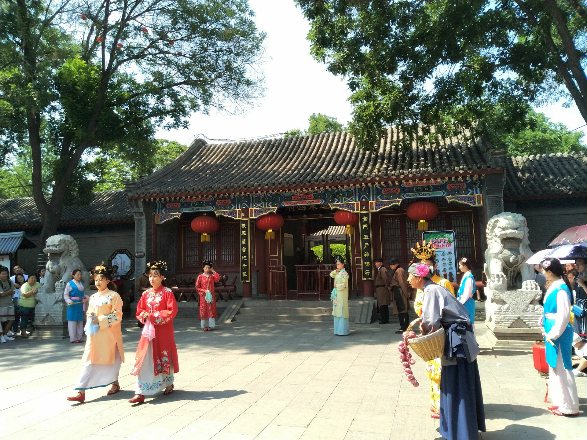
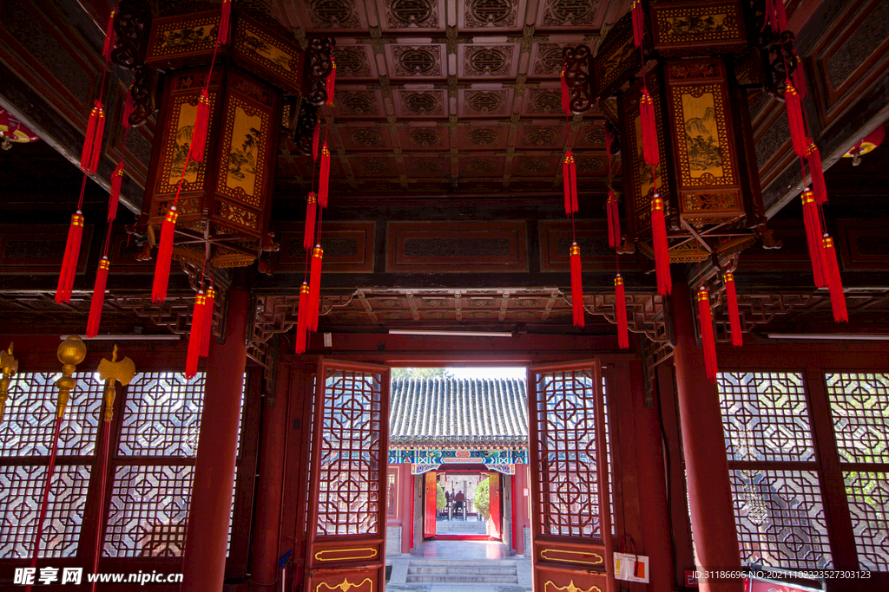

"满纸荒唐言，一把辛酸泪。都云作者痴，谁解其中味？"
正定荣国府是为拍摄电视剧《87版红楼梦》而建造的影视基地，于1984年始建，1986年竣工。 它是中国第一座专门为影视拍摄而建的仿古建筑群，被誉为"红楼文化博物馆"。 走进这里，仿佛穿越回了曹雪芹笔下的那个盛世家族。
1987年央视版《红楼梦》是中国电视剧史上的巅峰之作。剧组历时三年在全国各地取景， 而正定荣国府作为最主要的拍摄基地，承载了全剧近三分之一的镜头。 从"元妃省亲"到"黛玉葬花"，无数经典场景都诞生于此。
这部剧不仅还原了原著的精髓，更让荣国府成为了红迷心中的圣地。 每年都有无数红学爱好者和游客慕名而来，寻找剧中的记忆。



《红楼梦》原名《石头记》，是清代作家曹雪芹"披阅十载，增删五次"的心血之作。 全书以贾、史、王、薛四大家族的兴衰为背景，以贾宝玉、林黛玉、薛宝钗的爱情婚姻悲剧为主线， 描绘了一幅封建社会的百科全书式画卷。
正定荣国府的建造严格参照了原著中对宁荣街、荣国府的描写， 每一处建筑、每一件陈设都力求还原书中的意境，让文字中的红楼世界变成了现实。
《红楼梦》问世两百多年来，形成了专门的学问——"红学"，与甲骨学、敦煌学并称中国三大显学。 正定荣国府不仅是影视基地，更是红学文化的重要传播窗口。 这里定期举办红学讲座、红楼戏曲表演、传统服饰展示等活动， 让更多人了解这部伟大的文学经典。
如今，荣国府已成为正定文化旅游的名片，每年吸引数十万游客前来感受红楼文化的魅力。